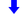
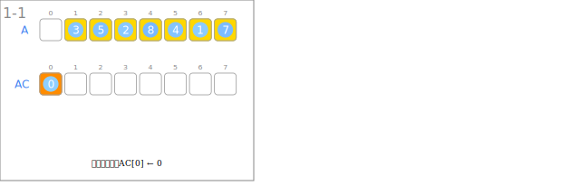
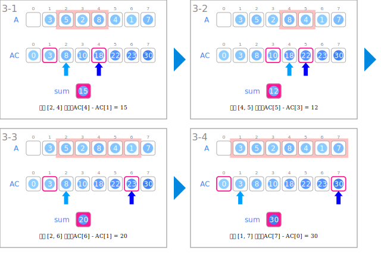

符号
| 数据 | ||
|---|---|---|
 |
输入的整数列 | A |
 |
整数列的累积和 | AC |
| 区间的和 | sum | |
| 输入 | ||
|---|---|---|
 |
读取整数列 | |
 |
将累积和的开头初始化为 0 | AC[0] ← 0 |
| 生成累积和 | ||
 |
与前一个元素相加 | AC[i] ← AC[i-1] + A[i] |
| 对请求的处理 | ||
 |
根据区间的起点和终点计算和 | sum ← AC[r] - AC[l-1] |
 |
给定的区间 | 区间[l, r] |
 |
区间的起点 | l |
|  | 区间的终点 | r |
动画
输入

生成累积和

对请求的处理
